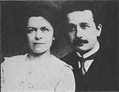

Năm 1900, cha mất. Cũng năm đó, Albert ra trường được xếp ưu hạng về hai môn toán và vật lí. Cậu viết trong nhật kí: “Về khoa học, tôi có nhiều ý hay lắm, nhưng phải đợi một thời gian ấp ủ lâu rồi mới đưa ra được”. Cậu đã dám chê Newton là đưa ra nhiều luật mà chẳng chứng minh gì cả. Chẳng hạn Newton bảo sức hấp dẫn trong vũ trụ có tác dụng ở xa và tức thời, điều đó khó mà hiểu được. Rồi ông lại cho rằng trong không gian có chất ê-te. Toàn là giả thuyết dựng đứng lên thôi, chưa thể chấp nhận được.
Mặc dầu đậu cao, Albert xin việc ở đâu cũng bị từ chối. Ngày nào cũng đọc mục “Cần người” trên các báo, rồi cũng chạy đi hỏi han và nộp đơn nhưng ngày tháng cứ qua mà số tiền trong túi cứ giảm dần, quần áo đã sờn và sắp rách. Có cái gì không êm đây? Tại sao các bạn học tầm thường, đậu thấp lại có việc ngay và kiếm được những chỗ tốt?
Đúng khi cậu thất vọng thì một trường kĩ thuật ở Winterthur cho cậu một chỗ dạy tạm. Học sinh đã bướng bỉnh lại làm biếng, chỉ thích chơi bời, tán gái, nhưng Einstein vừa khoan vừa nghiêm, giảng rất dễ hiểu, nên luôn luôn được chúng trọng. Ít tháng sau chàng dạy tại một trường tư, học trò rất tấn tới, viên chủ trường thấy ngại, bảo chàng:
- Tôi muốn các giáo sư của tôi theo lối dạy của tôi; thầy có lối dạy khác, nên tôi không thể mướn thầy được nữa.
Thế là chàng lại trở về Munich, vừa đúng lúc được giấy nhập quốc tịch Thuỵ Sĩ, hy vọng rằng từ nay xin việc sẽ dễ dàng, nhưng sự thật, chàng vẫn chỉ là người Thuỵ Sĩ trên giấy tờ, nên vẫn thất nghiệp.
Mãi đến mùa thu năm 1902, nhờ một người bạn giới thiệu, chàng mới được vô làm phòng Phát minh chấp chiếu ở Berne. Công việc của chàng là xét các phát minh người ta gởi tới xem có giá trị không, có phải là sáng kiến không, hay chỉ là cóp một phát minh có từ trước để phát tờ chấp chiếu cho người ta.

Albert Einstein và Mileva Maric
Einstein hơi thích công việc đó, xét đoán mau và sáng suốt, được cấp trên mến. Có việc làm chắc chắn, chàng cưới cô Mileva[7], gốc Serbe, bạn học cũng ở trường Polytechnicum và hai vợ chồng mướn một phòng nhỏ tồi tàn sống một cách cực khổ nhưng vui: vợ lo việc nhà và những lúc rảnh hăng hái bàn về vật lí với chồng.
Hồi này Einstein đưa ra một thuyết về các photon tựa như “hạt” ánh sáng đăng trên tờ Niên giám Vật lí. Nhiều người nổi lên công kích nhưng chàng tự tín, nói với vợ:
- Kẻ nào lựa con đường phát minh thì phải chịu cảnh cô độc trên đường.
Ít lâu sau chàng lại đưa ra một thuyết nữa: thuyết “vận chuyển Brownnich của các phân tử” mà chàng chứng minh bằng toán học. Nhờ thuyết đó chàng được đại học Zunich cấp cho bằng tiến sĩ và giới khoa học Thuỵ Sĩ bắt đầu để ý tới tên Einstein.
Năm 1905, Einstein lại chứng minh cũng bằng toán học rằng tốc độ ánh sáng trong khoảng chân không là bằng một hằng số duy nhất trong vũ trụ: không một năng lực nào có thể làm cho nó tăng hoặc giảm được, nó luôn luôn vào khoảng 300.000 cây số/giây. (300.000km/giây).
Cũng năm đó, ông đưa ra “thuyết tương đối hẹp” (théorie de la relativité restreinte).
Ông bảo chuyển động đều (mouvement uniforme) nào cũng là chuyển động của một vật này tương đối với một vật khác. Ví dụ đứng trên một toa xe lửa đương chạy nhìn một chiếc xe hơi chạy dưới đường, nếu xe hơi chạy cùng chiều với xe lửa thì ta thấy nó chạy chậm, nếu nó chạy ngược chiều với xe lửa thì thấy nó chạy nhanh. Mà nếu toa xe đóng kín mít các cửa, tồi om om thì ta có cảm tưởng rằng xe lửa không chạy[8].
Vậy thuyết của ông chỉ mới xét riêng về các chuyển động đều, nên ông gọi nó là “thuyết tương đối hẹp”. Thuyết đó giảng được vài cái mâu thuẫn trong môn vật lí thời đó, nên một số nhà bác học rất phục ông. Như Witkowski, người Ba Lan, gọi ông là “một Copernic nữa mới ra đời!”; Max Plank, người Đức, khen ông là can đảm và độc đáo.
Năm đó Einstein mới hai mươi sáu tuổi![9]
[7] Sách in là: Milena. (Goldfish).
[8] Dĩ nhiên thuyết đó không phải chỉ giản dị như vậy. Muốn trình bày cho đủ thì phải là một nhà toán học, mà không phải ai cũng hiểu được.
[9] Nguyễn Xuân Sanh viết về ba thuyết trên như sau: “(1) bản chất của chuyển động Brown trong chất lỏng, bằng cách sử dụng xác suất như một phương pháp nghiên cứu mới trong vật lý, góp phần đặt cơ sở cho ngành cơ học thống kê (độc lập với Gibbs), và giải thích được sự hiện hữu của nguyên tử, lúc bấy giờ còn bị nghi ngờ rộng rãi; (2) giả thuyết “lượng tử ánh sáng”, rằng ánh sáng được cấu tạo bằng hạt được gọi là photon với những “gói năng lượng lượng tử” rời rạc, chỉ được phát huy hay hấp thu trọn gói; một trong những áp dụng của giả thuyết lượng tử ánh sáng là giải thích được hiện tượng quang điện khó hiểu lúc bấy giờ (năm 1921 ông được giải Nobel về công trình này); và (3) “Về động lực học các vật thể chuyển động”, tức thuyết tương đối hẹp (special relativity theory)”. (Sđd, trang 50). (Goldfish).